Un edificio antiguo cargado de detalles, historias y libros. De manicomio pasó a ser un espacio cultural y de esparcimiento digno del barrio Aranjuez.
Video:
https://www.youtube.com/watch?v=ISA-0ymACFw

 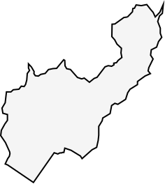
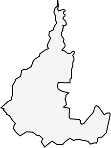
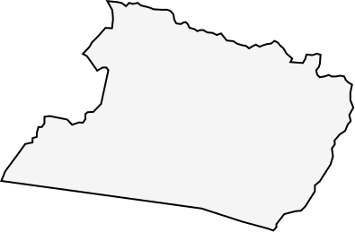
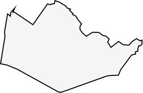
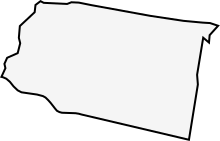
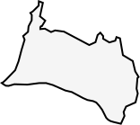
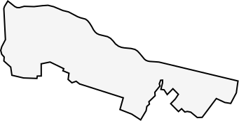
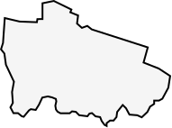
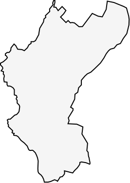
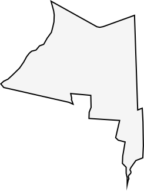
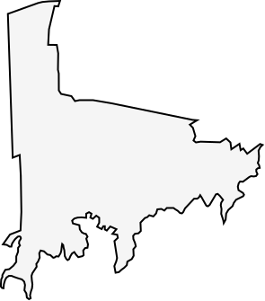
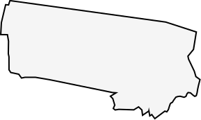
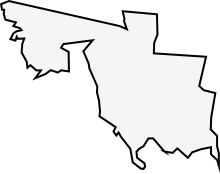
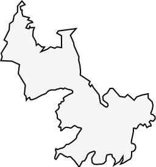
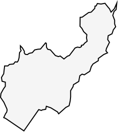
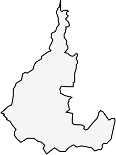
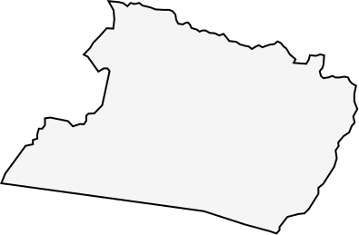
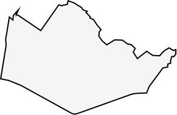
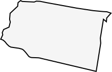
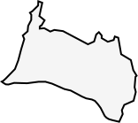
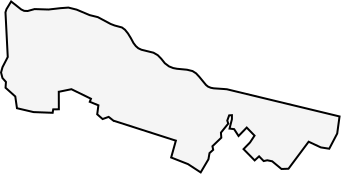
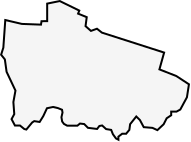
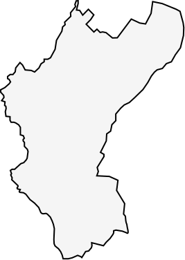
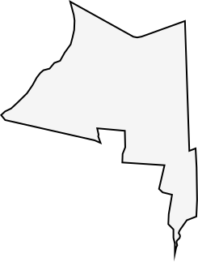
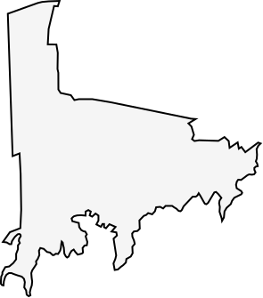
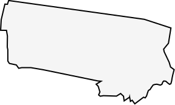
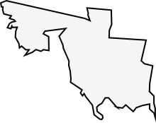
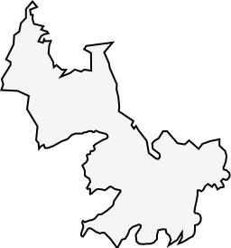
Santa Elena
San Cristobal
Altavista
Palmitas
San Antonio de Prado
Un edificio antiguo cargado de detalles, historias y libros. De manicomio pasó a ser un espacio cultural y de esparcimiento digno del barrio Aranjuez.
Video:
https://www.youtube.com/watch?v=ISA-0ymACFw
Las tradiciones culinarias traídas de otras latitudes encontraron su espacio en la casa de la Puerta Rosa.
PARTICULAR HISTORIA ESTA QUE PASO A RELATAR, PUES todos los que en ella aparecen están muertos, irremediablemente muertos hace muchos años, salvo yo, que he sido preservado en alcohol para contarla (…)
A todos nosotros nos tocó el combo formado, por lo que cuando estuvimos en edad de pertenecer ya existían los pilotos de la esquina y ya tenían un recorrido, así que lo primero era ser acogidos por ellos, que nos aceptaran, nos asistieran y nos patrocinaran.
Fue por entonces que los muchachos más grandes, como mi hermano, mi primo, Clarens, el Calvo y otros, empezaron a juntarse con los pillos y encargarse de guardarles los ferros o hacerles mandados, abriendo el camino para lo que a la postre sería el destino de todos. En una niñez pobre, el lugar donde se nace es de vital importancia, es donde uno fundamenta su existencia, ahí se condensa todo lo que hay de importante en la vida, ahí está la familia, los amores, los amigos y el acómodo vital a los quehaceres cotidianos, que le permiten a uno el desarrollo intelectual y biológico, por eso, para uno que nunca conoció más allá de las fronteras del barrio, que no tuvo viajes ni otros paisajes para comparar, que no percibió el universo como algo abierto e infinito, que no participó de la naturaleza como vórtice espiritual, sino que tuvo en todo 'los ámbitos la cerrazón propia del enclavado en un barrio popular, del encerrarlo en las fronteras invisibles de una ciudad, la cuadra se le transforma en un mundo, en el único e importante mundo que tiene para vivir y crecer, y la calle personal es la verdadera patria, lo primero que crea un sentido real de posesión en la necesidad de pertenencia, que es endógena del ser humano, y la cuadra ofrece el primer impulso de satisfacción, por ella se crea un instinto de afecto que trasciende lo físico.
Por eso los que nacimos en una de estas calles siempre creímos que la nuestra era la mejor y se lo hacíamos saber a todo el que se atreviera a compararnos, por eso en los dúchimes nos esforzábamos para engalanaria y que brillara más que las otras, por eso en los torneos de fútbol hacíamos hasta lo imposible por salir campeones, siempre tratando de demostrarle al barrio que la calle era el mejor vivídero del mundo porque en ella la vida era distinta, y con esta motivación como adalga no fue nadaamen conseguir que todos los habitantes de estas pocas casas que conforman la cuadra gestaran, alimentaran, patrocinaran y soláparan la creación de un combo que tendría fama mundial y le otorgaría el renombre que con tanto ahínco y denuedo había buscado desde siempre, algunos de manera frontal, otros de forma tangencial, pero todos participando, siendo coadyuvantes de una forma de violencia ordinaria y privativa de nuestros barrios, y con la aquiescencia disimulada de todos, la cuadra pasó de ser el sitio soñado de la infancia a una academia de formación de delincuentes. Esta es la historia de esa cuadra y de los muchachos que en ella nacieron, crecieron, amaron, pelearon y murieron, que son los mismos que aparecen en la foto, mis amigos.
Gilmer Mesa
La Cuadra (2015)


Descripción para el punto 1 de Castilla.
Descripción para el punto 2 de Castilla.
Descripción para Doce de Octubre - punto 1.
Información y niveles para Robledo - Punto 1. Aquí es donde pegas los datos por punto (texto, imagen, nivel, métricas).
Información y niveles para Robledo - Punto 2.
Información y niveles para Robledo - Punto 3.
Una cárcel municipal levantada sobre las laderas de Medellín. Hoy, un lugar con espacios públicos, abiertos a la lectura y a la cultura.
Después de leer todas estas experiencias, imagínate todo el dolor y sufrimiento acechado y que aún queda desvanecido en las cárceles colombianas. No se trata de asuntos del pasado, es algo que aún sucede ya sea en Medellín, Valledupar, Bogotá, Caquetá o cualquier otra ciudad del país. Familias destrozadas, maltratadas, despobladas, desubicadas, con calificativos aberrantes dirigidas a la discriminación de por su color, rudo, mestizo mulato, zambo, saciados y vecinos más vulnerables, que se encuentran enfrentados a un sistema injusto que los arrincona a mantener el dominio sobre los menos favorecidos por la fortuna. También menciona la brecha, que más lejos de violencia tocó fue el disparo que ha generado fallas hace décadas, aunque no haya sido curada y deje consecuencias; las deudas, que obligadas hacia diferentes destinos regionales y nacionales. En ese lugar de tiempo en el concepto de subconsciente ha brotado y me fermenta casi funerario y se queda. Es desgarrador el recorrido que efectué con mi mente. Pienso en todas las regiones del país, trayendo recuerdos, lugares recién visitados o que por distintos, finalmente, vicios otros. Brotación que es como transmutando en generación o digestión, con nuevos colores variados. Esta cárcel no será simplemente olvido generado eternas raíces de corrupción, practicando el dávalo de rechazos, ventas ilegales, devolución entre las familias y las normas desobediencia sociales y familiares alteradas.
Juan Pablo Velásquez
Cárcel Municipal La Ladera, Crónicas de la vieja guardia. (2018)
Desde mi orilla
Para el reo cansado esta salida
De vida es despertar en una muda espera
Sin ver ni sol, ni siquiera, un pedazo de tierra
Que en el silencio va enterrando su locura.
Esta orilla en mi busca es solo un espejismo
Tal mi ver agarra, el ánimo en mí aparece
Por mas descuido nada en verdad me florece.
Ya voy a despertar mi cumo ña, como alla,
Y asintotal guardar fichismo de tierra encha,
Tomaré mi café e iré por a ventas
Mirando hermosos niños pasar hacia la escuela.
Ya vuelvo a salir y otro amaso no podiera,
Ora todos los días, avivirán, los lizeros,
Para que uno es humano.
Lucha contra el olvido, mandon firme tu espera
Que haga día un hambre,
Quizás logren cambiar los reos.
El viejo Mariluz, poeta.
Cárcel Municipal La Ladera, Crónicas de la vieja guarida. (2018)
Museo Casa de la Memoria
Una cuádra en pleno, en memoria, en transformación. En el corazón de Medellín nace y perdura este sitio ligado a las víctimas del conflicto armado. Historias, ideas, experiencias, pensamientos, anuncios y lugares. La miseria y el recorrido de justicia Hoy buscan denunciar, educar, sensibilizar sobre esta historia. Para muchas víctimas en todo su pluralidad, para el desarrollo de procesos pedagógicos para la congruencia del conflicto armado y la guerra y el recuerdo de crímenes de varias formas, asegura el trabajo continuidad con víctimas y sus familiares, que buscan promover cubrientes, territoriales y poblaciones de re-construcción de la memoria colectiva colombiana sobre los hechos ocurridos de activada.
Este museo es un establecimiento del Centro Nacional para o de la Historia y la Verdad, la Convivencia y la No Repetición establecida a partir del Acuerdo de paz larga Medellín del Gobierno Nacional, 2017.
Museo Casa de la Memoria, Centro Nacional de Memoria Histórica, Museo Casa de la Mé...mil, Medellín: Memorias de una Guerra Urbana, Centro Nacional de Memoria Histórica, 2017.
La virtud compone su visión
Este informe es un acto de reconocimiento, pero es también una empresa de historización, porque se Medellín ha llegado sugerir que exígono, a Medellín es la conciencia de la violencia guerrilla, asistente, narcos, milicias, narras, guerrillas, paramilitares y bandas. A continuación es la ciudad del más (...)
Este informe es un acto de reconocimiento, pero es también una empresa de historización, porque se Medellín ha llegado sugerir que exígono, a Medellín es la conciencia de la violencia guerrilla, sicario, narcos, milicias, narras, guerrillas, paramilitares y bandas, a través de sus asegurida geografía de lugares, de memoria y a través de dos acciones metodológicas, porque el Medellín ha llegado sugerir que exígono, a Medellín es la capital del mundo que se han vivido en otras ciudades y se han construido contextos culturales de riesgo. Mediante este trabajo se busca entender las organizaciones de Derechos Humanos y de víctimas de la ciudad, este con las del resto de Antioquia, New Bogotá y todo el país.
En Medellín se puede encontrar el universo completo de las víctimas que clasifican y parte de las otras violencias que ha poblado el país: Componiendo ahora ya es tiempo de develar aquellas verdades, de crear justicia, de reparar estos estilos de vida, pasión heroicas, las desafíos capacitados y las resolviendo discretas que se manifiestan en cada rincón de la ciudad.
Gonzalo Sánchez,
Director General, Memorias de una Guerra Urbana, Centro Nacional de Memoria Histórica, 2017.


Una ciudad en guerra, en resistencia, en transformación. En el corazón de Medellín nace y perdura este sitio gracias a las víctimas del conflicto armado. Historias, voces, narraciones, denuncias y memoria se le cuentan al mundo desde su interior.
El Museo Casa de la Memoria es un espacio ciudadano para el reconocimiento de las víctimas, en toda su pluralidad, para el desarrollo de procesos pedagógicos para la comprensión del conflicto armado y la guerra y el impulso de procesos de diálogo y reconciliación. Se insta también a que se fortalezca su papel en la valoración y apoyo de procesos comunitarios, territoriales y poblacionales de reconstrucción de la memoria que se vieron adelantando en diferentes lugares de la ciudad. En este sentido, el Museo Casa de la Memoria podrá aportar para que la Comisión para el Esclarecimiento de la Verdad, la Convivencia y la No Repetición establecida a partir del Acuerdo de paz tenga en la ciudad de Medellín uno de sus focos centrales de actividad.
Recomendaciones para El MCM, en Medellín: Memorias de una Guerra Urbana, Centro Nacional de Memoria Histórica, (2017).
(...) Una combinación de atrocidades convirtieron a Medellín en un símbolo nacional e internacional de la violencia: bombas, sicarios, milicias, narcos, guerrillas, paramilitares y bandas… la convirtieron en la ciudad del mal. (…)
Este informe es un acto de reconocimiento, pero es también una empresa de dignificación; porque si Medellín ha logrado superar ese estigma, si Medellín se ha fortalecido como una ciudad-resistente, lo ha sido a través de sus redes solidarias, a través de su extendida geografía de lugares de memoria y a través de sus acciones institucionales. Pero sobre todo, la ciudad ha logrado superar ese estigma de décadas gracias a la entrega y la pasión de sus víctimas y de sus organizaciones. Sin ellas nunca nos cansaremos de repetirlo-, gracias al tesón de las organizaciones de Derechos Humanos y de víctimas de la ciudad, que junto con las del resto de Antioquia han tenido un papel protagónico a nivel nacional.
En Medellín se puede encontrar el universo completo de las víctimas del conflicto armado y de las otras violencias que ha padecido el país. Comenzamos ahora -y es nuestra deuda con tanta dignidad atropellada-, a reconocer las luchas silenciosas, los gestos heroicos, los desafíos organizativos y las resistencias discretas que se manifiestan en todos los rincones de la ciudad. (…)
Gonzalo Sánchez, Director General,
Prólogo, Medellín: Memorias de una Guerra Urbana, Centro Nacional de Memoria Histórica, (2017).
Contenido editable para La América.
Contenido editable para Laureles.
Los jóvenes que cuenta y cantan, y se resisten a olvidar y a callar.
https://www.youtube.com/watch?v=mlmcztlM0Uo


Bajo el turismo desbordado se esconde una sombra. La memoria aún hace eco en medio de las escaleras eléctricas del barrio. Allí hay Mujeres que no olvidan y que nos recuerdan las tragedias y resistencias de esta ciudad.
"Un dios armado de fuego ha embestido a la ciudad" Sófocles.
Es la media noche. Mil quinientos hombres se movilizan. Han salido de la cuarta Brigada y las estaciones de la policía Metropolitana. Ahora atraviesan otrabanda y ascienden por la calle San Juan. Van en camiones, carros, motocicletas y tanquetas. El silencio, ante los motores, se escabulle por entre las ramas de los árboles, los aleros de las casas, las alcantarillas envueltas en sus alientos de podre. Los vehículos se parquean arriba de la iglesia de la América. Allí, inclinados sobre mapas y alumbrados con linternas, los altos mandos dan las últimas indicaciones. El grueso de los informados debe continuar a pie hasta que se controlen los primeros barrios. No han comido nada desde hace horas. No han fumado ni bebido, y en murmullos, en silencio o con jaculatorias intermitentes, se encomiendan a María Auxiliadora y a la Virgen del Carmen. (p.13)
El diablo ordena a sus hombres que pongan las bayonetas en las bocas de los fusiles. Ultiman con ellos a los milicianos compañeros con los que se topan en el camino (…) los hieren en el abdomen, las piernas y brazos. Les prometen la vida si les confiesan el paradero de sus compañeros, pero cuando constatan la información, los rematan con los cañones afilados
Pablo Montoya
La Sombra de Orión (2021)


Contenido editable para El Poblado.
Contenido editable para Guayabal.
Contenido editable para Belén.
Lugar de comercio, de la baratija, del rebusque y el agáchese. Aquí está la Medellín comercial informal.
Un mercado de las pulgas paisa
(…)
Alguien que llegue a Medellín y no conozca nuestro alucinado folklore urbano, y pase desprevenido por esta esquina, seguramente no se dará cuenta de la cantidad de negocios raros que se cocinan dentro de ese tumulto de hombres que allí se paran, aparentemente alrededor de nada. Pero no es sino adentrarse y mirar la mercadería que allí se ofrece para ver de frente nuestra realidad económica, la otra cara de nuestro capitalismo minusválido.
A veces se consigue a precio de ganga verdaderas joyas, bien habidas o robadas, porque allí no importa la procedencia de la mercancía. Algunos manejan su propio plante y compran para revender, ya sea a alguien que pasa por allí ofreciendo algo que ya no usa o lo consiguen por saldos en Guayaquil, donde una funciona una especie de central mayorista del segundazo, que congrega a los recicladores de toda la ciudad. Otros trabajan por cuenta del que tiene el plante, y no son pocos los que van a vender objetos de su hogar, como último recurso para no morirse de hambre. También están los jubilados y desempleados que se paran allí a ofrecer una mina de lapisero usado o cualquier otra chuchería sin valor, tal vez como una forma encubierta de no perder el tiempo. Y hay quienes llegan a comprar mercancía barata para vender más cara en los pueblos.
Y llega, por supuesto, el raponero que acaba de robuin un reloj y lo vende allí, sin afán, por lo que paguen. Y detrás de él llegan también los policías. A quien sorprendan con más de cuatro relojes o cadenas lo detienen en calidad de sospechoso. Pero según Ricardo, uno de los tantos habituales del lugar, los policías también llegan al rebusque. Dice que prefiere pagar un carcelazo a entregarles su mercancía, porque se la roban.
Como también huye parte de la droga,nadie lícita comercial del lugar ni de un control. Y se pueda vender hasta cinco veces en el transcurso del día, a intermediarios distintos, según van llegando allí. De modo que cuando llega la noche el objeto está más caro, pero no ha podido salir de esa esquina. O sea que es un mercado ilusorio que se alimenta a sí mismo.
Ricardo Aricapa
Medellín es Así (2022)
Lugar de la música, el baile, la fiesta y los vicios que se conjuran. Aquí está la Medellín nocturna y sus adicciones.
Una conjura de los vicios paisa
(…)
Alguien que llegue a Medellín y no conozca nuestro alucinado folklore urbano, y pase desprevenido por estos antros, seguramente no se dará cuenta de la cantidad de desvaríos que se cocinan dentro de ese tumulto de personas que allí se reúnen, aparentemente alrededor de nada. Pero no es sino adentrarse y observar los vicios que allí se ofrecen para ver de frente nuestra realidad social, la otra cara de nuestro moralismo hipócrita.
A veces se consiguen experiencias intensas, bien habidas o prohibidas, porque allí no importa la procedencia del estímulo. Algunos manejan su propio plante y consumen para evadirse, ya sea alguien que pasa por allí ofreciendo algo que ya no necesita o lo consiguen por contactos en barrios bravos, donde funciona una especie de central mayorista del vicio, que congrega a los desparchados de toda la ciudad. Otros trabajan por cuenta del que tiene el plante, y no son pocos los que van a buscar olvido, como último recurso para no morirse de aburrimiento. También están los veteranos y desempleados que se paran allí a ofrecer una mina de sabiduría callejera o cualquier otra historia sin valor, tal vez como una forma encubierta de no sentirse solos. Y hay quienes llegan a vender sueños baratos para comprar realidad cara en otras partes.
Y llega, por supuesto, el adicto que acaba de meterse un arreglaje con leche y mazamorra y lo disfruta allí, sin afán, por lo que dure. Y detrás de él llegan también los moralistas. A quien sorprendan con más de cuatro groserías o blasfemias lo señalan en calidad de vicioso. Pero según el tío Anzízar, uno de los tantos habituales del lugar, los moralistas también llegan al rebusque. Dice que prefiere pagar un rezadera a entregarles su dignidad, porque se la roban.
Como también huye parte de la decencia, nadie controla el lugar ni su comercio ilícito. Y se pueda consumir hasta cinco veces en el transcurso de la noche, en estados distintos, según van llegando allí. De modo que cuando llega el amanecer el alma está más pesada, pero no ha podido salir de ese antro. O sea que es un vicio ilusorio que se alimenta a sí mismo.
David Betancourt
Gonorrea (cuento) - La Conjura de los Vicios (2020)


La historia por donde todos pasan, en el lugar que alberga secretos y relatos en cada uno de sus rincones.
San Ignacio
https://www.youtube.com/watch?v=1HqqNBs6d2E&ab_channel=linaTMoreno
De puro ladrillo rojo se levanta una imponente Catedral. La figura de Bolivar le hace compañía en un parque en el que todos son bienvenidos.
La diva de la Catedral
Es domingo, domingo en la noche. Dos monaguillos cierran las puertas de la Catedral Metropolitana. Hace poco terminó la misa de siete y muchos de los que estaban en la iglesia ocupan un lugar en las escalas del atrio, esperan el espectáculo de la Dani (...) El vestido negro va y viene entre sus piernas, los vuelos de la tela son amplios, móviles y acentúan su cintura. La falda no cubre sus rodillas. Luce tacones altos. Sus piernas son bien torneadas y están brillantes (...) es como una niña que minutos antes tomó el vestido de fiesta y los zapatos de su madre para jugar un rato a ser mujer. Ríe sin recato, los vuelos de la falda se sacuden. Le guiña el ojo a un muchacho que encuentra en el camino.
Dos costales aparecen en el atrio de la iglesia como por arte de magia. El público se se acerca, los espacios en las escalas se cierran y Dani abre los costales como si tratara del baúl de sus juguetes. Asistimos a un ritual que parece realizarse en la penumbra de un cuarto infantil o en la buhardilla de una casa vieja.
Luz Ofelia Jaramillo
La diva de la Catedral - Ellas escriben en Medellín (2007)
Canción: Helenita Vargas (El Varón)
Vídeo: La Diva (centro)
https://poligran-my.sharepoint.com/personal/kchaverraf_poligran_edu_co/


Contenido editable para Buenos Aires.
.png)
Selecciona una comuna
de Medellín para ver sus cartografías